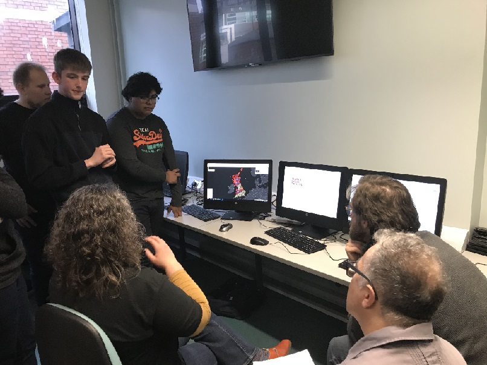

About Cantor College
We are a prestigious fictional college offering a range of courses in web development and design. Our goal is to nurture students to become the next generation of web professionals.
Our Facilities
Explore Cantor College's world-class facilities designed to help students succeed:
- Advanced Computing Labs: Equipped with the latest hardware and software, accessible 24/7.
- Design Studios: Creative spaces with high-end graphic tablets and professional software.
- Innovation and Makerspace: Tools like 3D printers, laser cutters, and CNC machines for prototyping.
- Technology Sandbox: Experiment with VR, AR, and AI technologies.
- Collaborative Learning Spaces: Smartboards, video conferencing tools, and flexible seating.
- Library and Resource Centre: Extensive books, journals, and digital resources with quiet study areas.
- Student Hub: Social spaces with a café, lounge areas, and recreational facilities.
- Career and Development Centre: Career counseling, resume workshops, and industry networking events.
- Fitness and Wellness Centre: Gym, fitness classes, yoga, and wellness services.
- On-Campus Housing: Comfortable residence halls with modern amenities.
We provide everything you need to thrive academically and personally at Cantor College.
